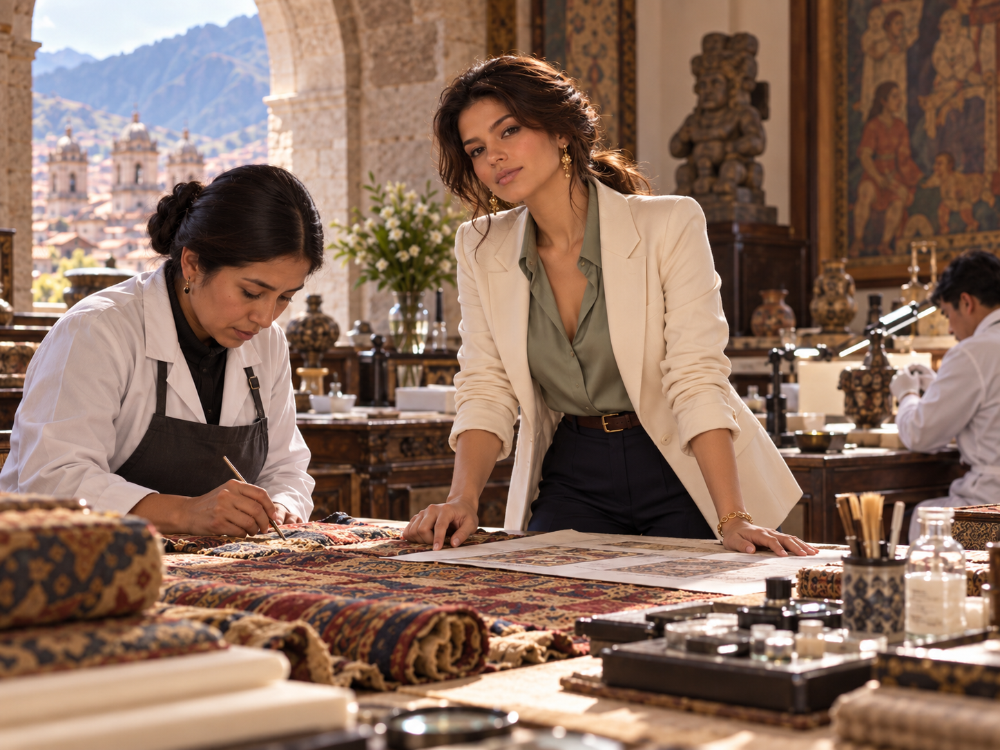
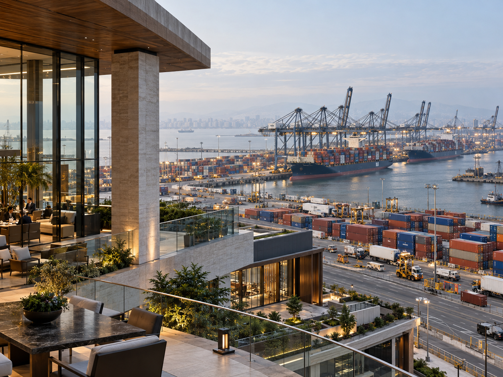
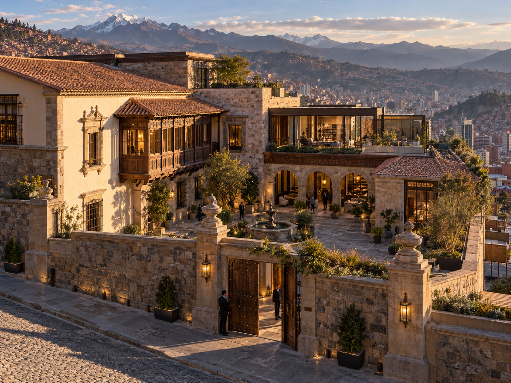
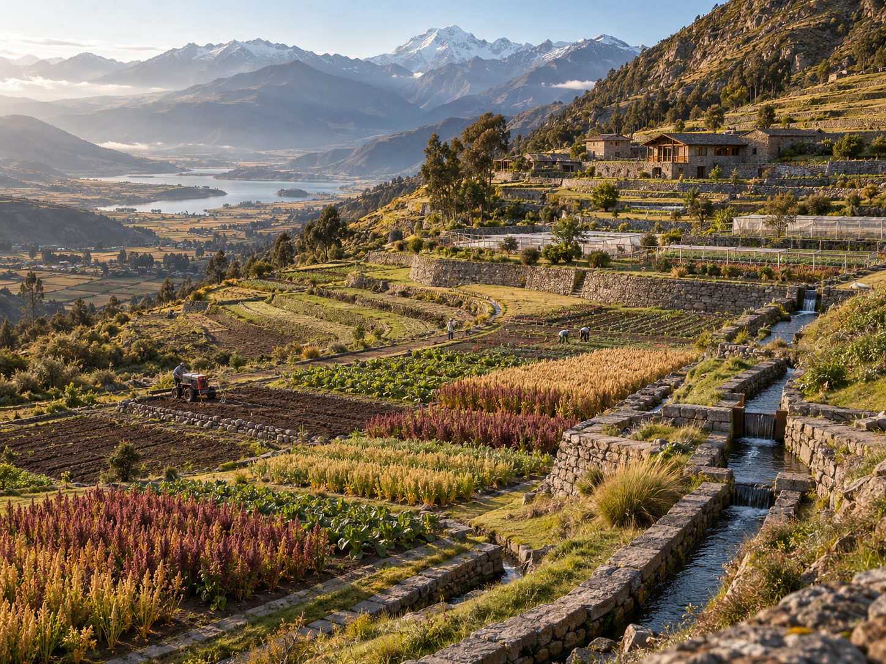
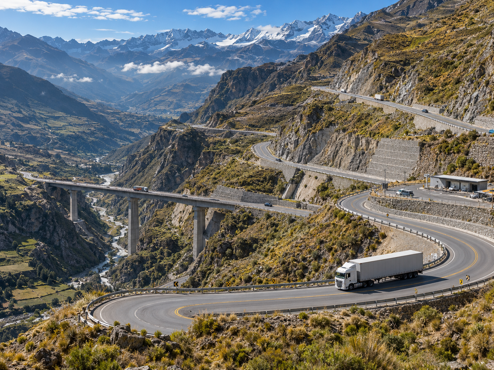
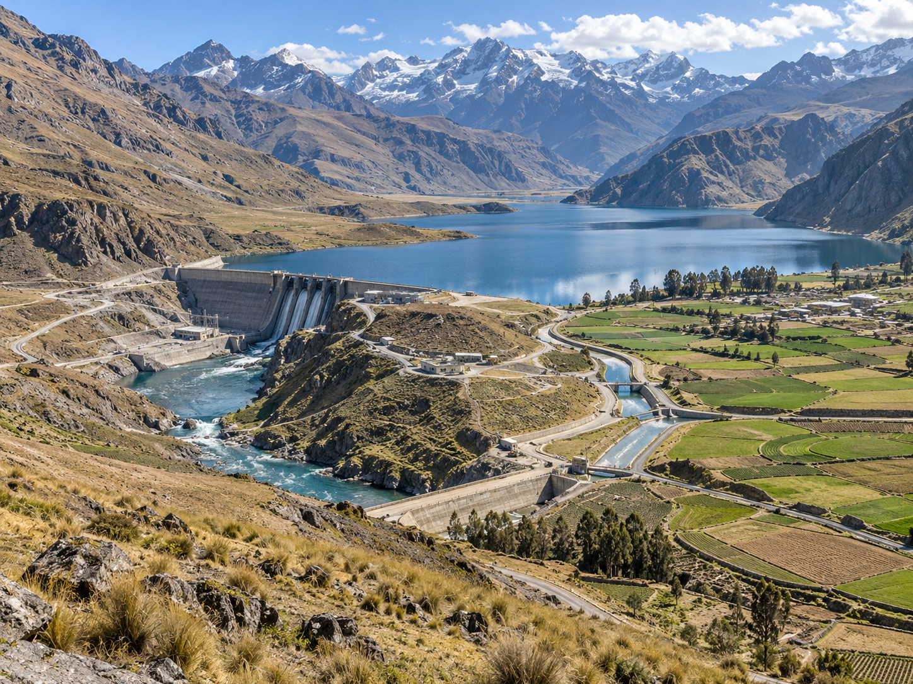

1
Upload 1
Unidentified · original PNG
The seven newly uploaded original images are displayed as 1–7, numbered by their original UUID filenames in alphabetic order. Compare them with the separate A–G labeled reference collage supplied in the project conversation.
Letters describe intended subjects and are not presumed to match the numbered uploads. Do not approve an image based only on upload order.






Match each letter in the reference collage with its numbered upload above. All numbers 1–7 should appear exactly once. Reply in this format (example only):
After confirmation, the seven unmodified Git blobs will be renamed, placed in the appropriate House Amaru dossier sections, and recorded in a permanent source mapping.